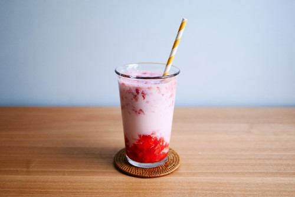

Strawberry Milk

Description:
Cold and sweet strawberry milk. Perfect for spring.
Ingredients
- 12 strawberries
- 2 tbsp honey
- 250g milk
Steps
- Quarter strawberries and mash into desired consistency.
- Mix in honey well.
- Add in a couple spoonfuls of the strawberry honey mixture to a tall glass and add in milk. Top with additional sliced strawberries if desired.
- Serve with a spoon to mix and enjoy!